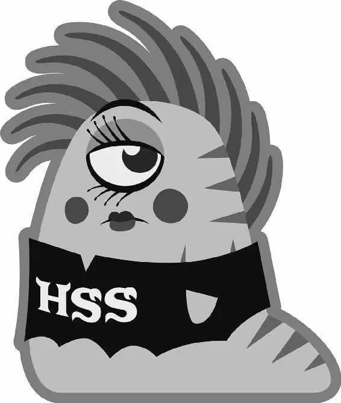

The next morning, Mike rolled over in his bunk and onto a pillow of blue fur. Still snoring, Mike cuddled up to it and murmured, “I know you’re a princess and I’m just a stable boy ...” Then he opened his eye and saw he was embracing Sulley’s hand, which was hanging down from the upper bunk. “AGHHHH!” Mike screamed as he pushed the hand away.
Sulley woke up with a start and toppled out of bed. “What are you doing?” he yelled at Mike.
“Your grubby paw was in my bed!” Mike yelled back.
Sulley’s eyes narrowed. “Were you kissing my hand?”
Mike pretended to laugh. “Kissing your hand? No! And what about all your shedding?”
“I don’t shed,” Sulley replied.
“Really?” Mike asked skeptically. He pounded Sulley’s mattress, and a cloud of blue hair rose into the air.
Sulley just grumbled and tried to maneuver around Mike.
“Excuse me,” said Mike, who was heading for the door. “Would you just let me —”
“I just want to get my stuff,” Sulley growled.
The two started to struggle as they tried to move around the little room, until both of them tumbled out the bedroom door and onto the hallway f loor.
Suddenly, there was a flash! Mike and Sulley looked up to see all the Oozmas gathered in the hallway. “First morning in the house!” Squishy exclaimed, holding up a camera.
“That’s going in the album!” Art added.
Don came running up the stairs. “Guys! We got a letter! It’s the first event of the Scare Games!” Mike, Sulley, and the other OKs quickly gathered around. Mike tried to take the letter from Don, but it kept sticking to the older monster’s tentacles. Don smiled meekly and struggled with the letter, muttering an apology, “Tentacles ... sticky.”
Finally, Mike tore it loose and read the details. “Wait a second,” Mike said, surprised. “They want us to meet where?”
That night, Mike, Sulley, and the Oozmas stepped into the campus’s large, dark sewer drain. Water dripped from the ceiling, and the sound of their footsteps echoed eerily in the cold, damp tunnel. They turned a corner and saw a crowd. The Greek Council president and her vice president stood on a stage in the center of the floodlit sewer.
“Welcome to the first competition of the Scare Games: the Toxicity Challenge!” the president said to the competing sororities and fraternities. “Every Scarer that enters a child’s room has to navigate a minefield of deadly toxicity, because there is nothing more toxic than a human child!”
The vice president continued, “But thanks to MU’s biology department, we’ve found a close second — the stinging glow urchin!”
The Oozmas watched a group of students carry in a large wooden box. The president reached inside with a metal claw and pulled out a round, spiky blue creature that hissed and sparked menacingly.
“Oooh,” Art said softly. “I want to touch it.”
The president pointed to the side of the stage, toward a tunnel strewn with hundreds of the glowing, crackling urchins. Art seemed even more intrigued. “This is the starting line,” the vice president said. “The light at the end of the tunnel is the finish line. Whoever comes in last is eliminated from the Games.”
“Eliminated?” Terry gasped.
Mike looked him in the eye. “We’re not going to lose; all we need is right here,” he said, pointing to his chest.
Squishy smiled. “You mean heart?”
“No, I mean me,” Mike replied. “I’m gonna win the race for us.”
Sulley looked at Mike like he’d lost his mind. “All right,” Sulley said, pushing Mike out of the way. “That’s very cute, but move, move. I’m gonna win this.”
Mike pushed Sulley right back. “It’s an obstacle course!” he said, looking up at him. “What are you going to do? Roar at it?”
The PNK sorority, in their bright pink tees, gathered next to the Oozmas. “Okay,” one of the PNKs said to her team. “This is all about teamwork, so let’s stick together!”
As the teams came to the starting line, the Greek Council president made a final announcement. “Attention, teams, one last thing. Scarers work in the dark.”
Suddenly, the floodlit sewer went black. And the Oozma Kappas went from nervous to completely terrified.
